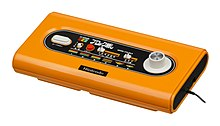

Color Tv Game
Color TV Game är en konsol tillverkad av det japanska företaget Nintendo under sent 1970-tal. Konsolen släpptes bara i Japan och består av totalt fem olika system som vardera innehåller ett inbyggt spel.
Color TV Game är en konsol tillverkad av det japanska företaget Nintendo under sent 1970-tal. Konsolen släpptes bara i Japan och består av totalt fem olika system som vardera innehåller ett inbyggt spel.